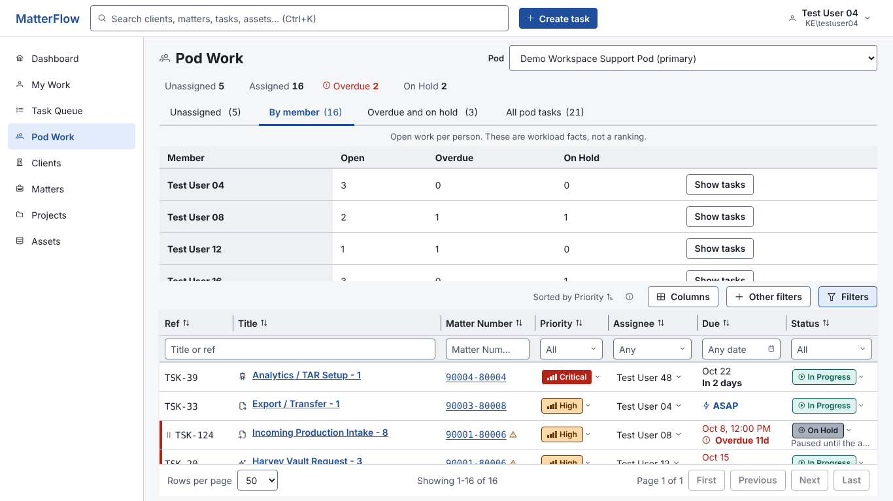

| Member | Open | Overdue | On hold | |
|---|---|---|---|---|
| Not assigned to a person | 3 | 0 | 0 | View tasks |
| Test User 21 | 5 | 0 | 1 | View tasks |
| Test User 25 | 1 | 1 | 1 | View tasks |
| Test User 41 Out of office until Oct 26 | 7 | 1 | 2 | View tasks |
| Test User 45 | 3 | 0 | 1 | View tasks |
| Test User 49 | 2 | 2 | 0 | View tasks |
| Show 16 members with no open work Test User 01, 04, 05 (out of office), 08, 09 ... | ||||
What changed: (1) members with work first, the 16 idle ones folded (an idle member is who you assign to, so they stay one click away and show availability); (2) availability chip next to the name, the same chip as the assignee picker; (3) a neutral bar scaled to the largest load, no colour judgement, no rank numbers, default order stays alphabetical, sorting is the viewer's choice (UX spec S04: workload facts, not a ranking); (4) the table grows with the page, no 230 px scroll box; (5) the row action is one link per row, nearer the name; (6) the tab counts members with work, not tasks; (7) the strip is the same four items as My Work and each is a link.